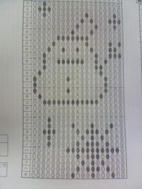

|
Back
【2009年度入部メンバー】
A. Sax
| No Image |
名前： 許麗華（キョレイカ） |
担当楽器 ALTO SAX |
| 大学・学部 愛知大学 法学部 |
国籍 中国(中国語喋れません。名古屋弁喋ります) |
| 出身高校 愛知高校 |
高校の時の部活 吹奏楽部 |
| 見た目 ２３歳 |
体力年齢 ４５歳 |
| No Image |
名前： 櫻井那央（サクライナオ） |
名古屋大学
農学部応用生命科学科 |
| 三重県民です(^-^)v |
四日市高校出身で普通科国際科学コ―スでした。 |
| 高校ではバドミントン部に入ってました。 |
野菜とフルーツがあれば生きていけます☆ |
| 弱点は方向音痴なところ(>_<) |
特技は…反復横飛びカナ |
T. Sax
| No Image |
名前： 佐藤祥平（サトウショウヘイ） |
名古屋大学＆パラ経 |
誕生日２月19日
うお座かみずがめ座 |
希少なＡＢ型 |
好きな食べ物 コロッケ、シチュー
嫌いな食べ物 ブロッコリーとカリフラワー |
今更ですが岐阜県の恵那高校出身で |
| 爺ちゃん家が農家で。米、味噌、野菜全般がタダです |
ピアノも弾けたりしますがテナー担当で |
| No Image |
名前： 鈴木秀（スズキシュウ） |
大学＆学部： 南山大学総合政策学部 |
| 血液型： Ｏ型 |
出身校： 愛知高校 |
| 好きなアーティスト（JAZZ）： Eric Marienthal |
好きな牛丼： 大盛り つゆだく丼半分くらい浸るまで |
| 家庭の味： 肉じゃが |
パーティー： フリーザー ギャラドス ゲンガー カビゴン ラッキー リザードン |
B. Sax
| No Image |
名前： 長大地（チョウダイチ） |
- |
| - |
- |
| - |
- |
| - |
- |
Trumpet
| No Image |
名前： 荒川裕哉（アラカワユウキ） |
- |
| - |
- |
| - |
- |
| - |
- |
 |
名前： 北村実里（キタムラミサト） |
大学＆学部： 名古屋大学文学部 |
| 担当楽器： Ｔｐ |
楽器の名前： がんこちゃん |
| あだ名： みりぃ |
血液型： Ｏ型 |
| 星座： さそり座 |
好きな食べ物： まぐろ |
| No Image |
名前： 中川翔太郎（ナカガワショウタロウ） |
〓名古屋大学工学部 |
| 〓担当楽器 トランペット |
〓好きな食材 卵 |
| 〓あだ名 しょこたん（最近は自分からネタにするようになりました） |
〓好きな単語 愛、勇気、気合い |
| 〓目印 他の男性陣よりほんのちょこっとだけ低めの身長 |
〓生涯の命題 自分はボケなのかツッコミなのか |
| No Image |
名前： 西村光未（ニシムラミツミ） |
大学＆学部： 名城大学薬学部 |
| 出身校： 愛知高校 |
出身地： 名古屋 |
| 生年月日： 平成2年6月23日 |
血液型： Ａ型 |
| 呼称： 「みつみ」って言います。一発で読んでもらえると喜びます。 |
楽器： ピンクブタに入ってます。 |
| No Image |
名前： 拜郷貴行（ハイゴウタカユキ） |
大学&学部 愛知大学 法学部 |
| 出身高校 愛知高 |
名字でしか呼ばれたことありません |
| なので、誰かあだ名考えてください |
前にピザを電話注文したときに拜郷ってちゃんと言ったのに海王で届きました |
| 必死にロールアップしてます |
全然面白いこと思いつきませんでした |
|  |
名前： 古川由季乃（フルカワユキノ） |
大学＆学部： 名古屋大学工学部化学・生物工学科 |
| 楽器： Trumpet |
生誕： 4/13 |
| 血液： B型 |
出身： 滋賀県 |
| 前歴： エレキギタリスト(仮) |
嗜好： 大豆食品・苺 |
Trombone
| No Image |
名前： 伊藤成美（イトウナルミ） |
- |
| - |
- |
| - |
- |
| - |
- |
| No Image |
名前： 高野仁美（タカノヒトミ） |
大学：南山大学 人文学部 |
| 担当：トロンボーン |
あだ名①：ひとろん |
| あだ名②：たか |
あだ名③：アメリカン（アメキャン） |
| あだ名④：たまごちゃん |
楽器：米子（べいこ）ちゃん♀ |
| No Image |
名前： 牧野竜士（マキノリュウジ） |
大学 愛知学院大学商学部ビジネス情報学科 |
| 楽器 Ｂ.Ｔｂ |
出身校 愛知高校 |
| いつも マッキー |
まれに まーきのっ |
| 貴方も私も ポッキー |
ダイエット しようかな… |
| No Image |
名前： 町田憲太郎（マチダケンタロウ） |
担当楽器 とろんぼーん |
| 出身地 金山周辺 |
大学&学部 大同大学工学部都市環境デザイン学科社会…社…???長くて忘れました（笑 |
| - |
- |
| - |
- |
Piano
| No Image |
名前： 木下俊介（キノシタシュンスケ） |
- |
| - |
- |
| - |
- |
| - |
- |
| No Image |
名前： 真鍋志歩（マナベシホ） |
名古屋大学農学部 |
| 楽器：ピアノ |
誕生日：1990年10月5日 |
| 血液型：Ｂ |
出身：徳島県 |
| 好き：食べること、動物 |
嫌い：勉強、えぐいもの |
Guitar
| No Image |
名前： 井戸めぐみ（イドウメグミ） |
名古屋大学教育学部 |
| 高校:向陽 |
あだな①いどぅー |
| あだな②ぐみぐみ |
あだな③もんごり |
| 出身国:モンゴル |
恐怖症:丸山 |
Bass
| No Image |
名前： 長谷川詠子（ハセガワエイコ） |
名古屋女子大・家政 |
| 担当楽器 ベース♪ |
血液型 Ａ |
| 好きな動物 ぞう！ |
誕生日 １月２２日 |
| 出身 静岡県かけがわ市 |
高校時の部活 吹奏楽☆ |
| No Image |
名前： 藤田将史（フジタショウジ） |
名古屋大学理学部一年 |
| パート Ｂ |
出身校 千葉県立東葛飾高校 |
| 血液型 大型 |
身長 180センチ(近似値) |
| 得意種目 ハンドボール投げ |
好きな芸能人 豊田エリー
好きなお笑い芸人 マイコーりょう |
Drums
| No Image |
名前： 稲継実栗（イナツグミクリ） |
名古屋大学・農学部 |
| ドラム |
血液型はＡＢ |
| 誕生日はドラえもん |
身長はミニマム |
| お菓子はクッキー |
かき氷は宇治金時 |
| No Image |
名前： 丸山沙織（マルヤマサオリ） |
岐阜大学 応用生物科学部 |
| 出身高校:向陽 |
血液型:Ｏ型 |
| あだな:さおりん、まる |
出身国:日本 |
| 恐怖症:カエル、ホラー |
よく骨盤をたたいてるらしい |
Back
|